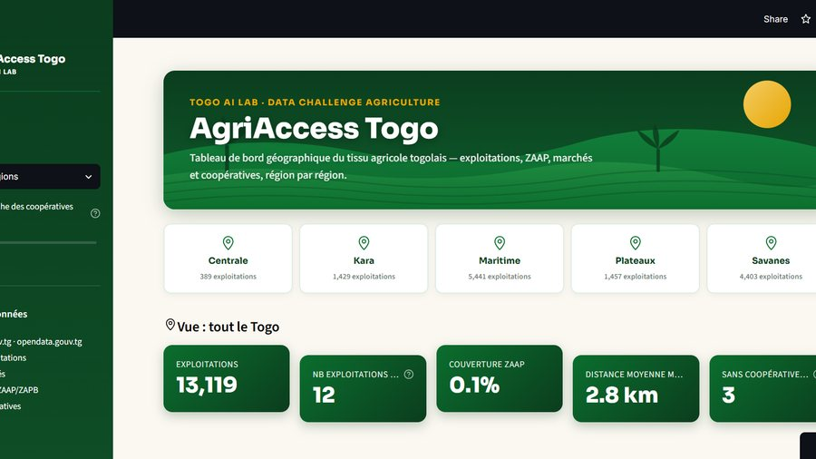
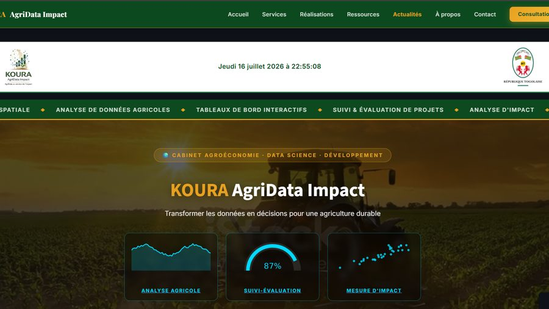
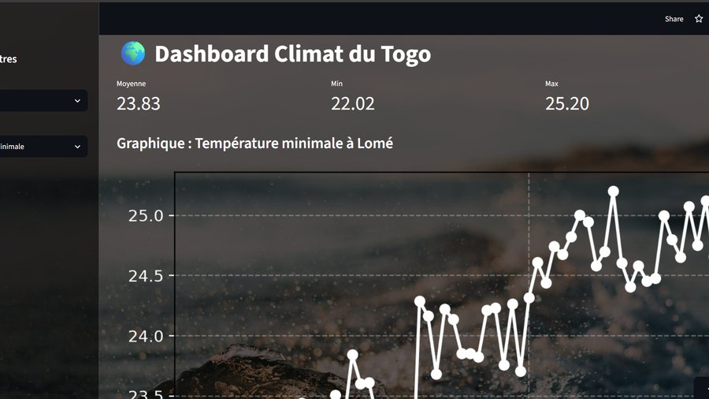
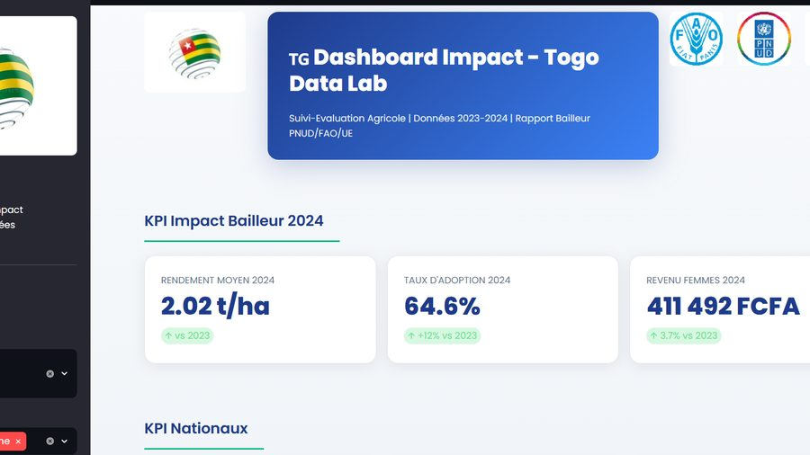
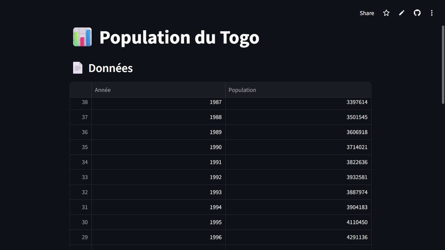
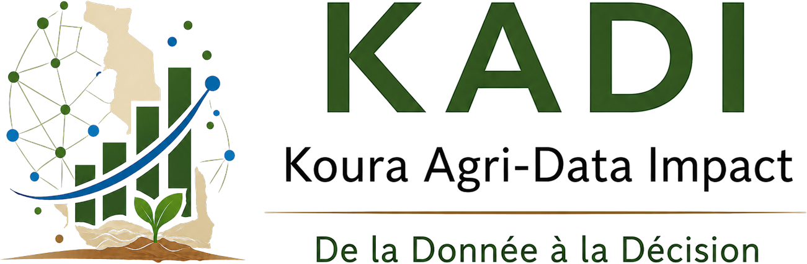
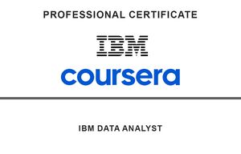

Housseïne
TCHATAKOURA
Agroéconomiste & Data Scientist Junior · Spécialiste Suivi-Évaluation de Projets de Développement · Développeur Web
je conçois des outils de suivi-évaluation (dashboards interactifs, cartographies géospatiales et analyses d'impact) qui transforment des données agricoles et socio-économiques complexes en outils de pilotage concrets pour les ONG, bailleurs et décideurs politiques engagés dans le développement en Afrique de l'Ouest.
Données agricoles,
décisions éclairées
Formé en socio-économie rurale et actuellement en Master de Suivi-Évaluation des Projets et Programmes de Développement, je combine une expertise terrain avec des compétences avancées en analyse de données et en outils numériques. Mon parcours s'appuie sur la conduite d'enquêtes socio-économiques, l'analyse statistique, l'évaluation de projets de développement, ainsi que la conception de tableaux de bord interactifs destinés à soutenir la prise de décision. À l'intersection de l'agriculture, du développement et de la data science, j'accompagne les organisations dans la production d'analyses fiables, le suivi de leurs performances et la valorisation de leurs données pour un impact durable.
Futur fondateur du cabinet KOURA AgriData Impact, je conçois des outils adaptés aux réalités des systèmes agricoles d'Afrique de l'Ouest : collecte numérique (KoboToolbox), automatisation des flux de données (Google Sheets, Apps Script), cartographie spatiale (QGIS), visualisation interactive (Streamlit, Power BI) et suivi-évaluation selon les standards internationaux.
Chaque analyse que je produis répond à une question concrète : où investir ? Quelle culture prioriser ? Quel impact mesurer ? Quels résultats atteints ? La donnée n'a de valeur que transformée en action.
Cabinet en projet
KOURA AgriData Impact sera lancé avant décembre 2027 : un futur cabinet de conseil en agroéconomie, data science, développement web et suivi-évaluation, au service des acteurs du développement rural en Afrique de l'Ouest.
Vision du cabinet
Transformer les données en leviers de développement en mettant mon expertise au service des acteurs publics, privés et des organisations de développement, pour une agriculture moderne fondée sur des analyses fiables et des solutions numériques innovantes.
Zone d'intervention
Togo (Dapaong) · Rayonnement national et sahélien · ONG, bailleurs multilatéraux, ministères et entreprises agricoles.
Ce que je propose
Des solutions complètes en agroéconomie, data science et suivi-évaluation pour accompagner vos projets de développement rural.
Analyse de données
Exploration, nettoyage et analyse approfondie de vos données pour découvrir des patterns et insights cachés.
Tableaux de bord
Création de dashboards interactifs et dynamiques pour suivre vos KPIs en temps réel.
Visualisation de données
Transformer vos données en visualisations claires et impactantes pour mieux les communiquer.
Suivi-Évaluation (S&E)
Conception et mise en œuvre de systèmes de S&E performants pour mesurer l'impact réel de vos projets.
Analyses agroéconomiques
Diagnostics filière, analyses marchés et études de financement agricole adaptés au contexte sahélien.
Géospatialisation
Cartographie, analyse spatiale et mapping pour la planification agricole et décisions territoriales.
Développement web et Automatisation
Conception de sites vitrines, portfolios et outils web sur mesure, avec automatisation des flux de données pour gagner en efficacité.
Projets Data et Dashboards
Des outils en production, accessibles et utilisables par des non-techniciens.

Dashboard interactif mappant 13 119 exploitations agricoles, 6 859 coopératives et 1 883 zones ZAAP/ZAPB. Outil de diagnostic pour décideurs politiques et ONG.

Dashboard de suivi d'impact pour projets d'intensification agricole. Filtrages par culture et zone, analyse rendement vs revenu par région.

Monitoring des températures et pluviométrie depuis 1976. Détection d'anomalies climatiques pour la gestion du risque agricole.

Suivi-évaluation d'indicateurs clés : rendement +5 % vs 2023, adoption technologies +12 %, revenus femmes +3,7 %. Filtrage par zone et sexe.

Pipeline Python → API REST World Bank → visualisation de la croissance démographique. Population : 2,64 M (1976) → 9,5 M (2024), TCAM 2,5 %/an.
Formation et Expérience
Expérience
- Collecte et nettoyage de données via API REST (SpaceX) et web scraping
- Analyse exploratoire (EDA) avec requêtes SQL et visualisations de données
- Création de cartographies interactives (Folium) et dashboards (Plotly Dash)
- Développement et comparaison de modèles de classification ML (Decision Tree, SVM, Régression Logistique, KNN) pour prédire le succès d'atterrissage des boosters
- Étude technique : financement agricole (projet PROSAD)
- Collecte et structuration de données terrain (KoboToolbox)
- Analyses socio-économiques et économétriques
- Rédaction de rapports techniques destinés aux bailleurs
Formation
Soutenance prévue 2027. Spécialisation en évaluation d'impact et politiques de développement agricole.
HTML5, CSS3, JavaScript, Responsive Design. Formation suivie pour renforcer les compétences en développement web full-stack et la création d'applications web performantes.
Python, Machine Learning, SQL, Pandas, visualisation de données. Projets appliqués à l'agriculture.
Spécialisation agroéconomie et développement rural. Base solide en économétrie et statistiques appliquées.
Compétences techniques
Des outils choisis pour leur pertinence sur le terrain africain.

KOURA AgriData Impact
Transformer les données en décisions pour une agriculture durable
Transformer les données en décisions pour une agriculture durable Un futur cabinet de conseil dédié à l'agroéconomie, la data science, le développement web et le suivi-évaluation de projets de développement rural en Afrique de l'Ouest pensé pour accompagner ONG, bailleurs, ministères et coopératives agricoles avec des outils numériques fiables.
Dapaong, Togo · Afrique de l'Ouest
Formations et Certifications professionnelles
Développement Web
En cours de formation — 2025
IBM Data Science
Professional Certificate — 2026

Google Data Analytics
Career Certificates
Coursera Data Science
Johns Hopkins University
Master Suivi-Évaluation
Université de Kara — 2026
DataCamp Python
Data Science Track
Licence Agroéconomie
ESA Lomé — 2024
Travaillons ensemble
Vous cherchez un agroéconomiste data-driven pour votre projet de développement, une étude d'impact, un dashboard personnalisé ou un site web sur mesure ? Écrivez-moi.
Je réponds habituellement dans les 24 heures.